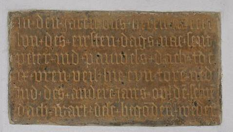
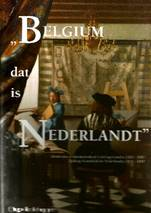

> nieuwsbrief
> JGe jg. - Xe trimester JAAR
Mededelingen
Ontmoetingsdag ZANNEKIN op zaterdag 11 oktober
Erkelenz (Nederlands: Erkelens) wordt op zaterdag 11 oktober
het oord van onze Ontmoetingsdag
2014. Hieronder een stukje geschiedenis en verderop
praktische info inzake uw deelname.
Een Gelderse voorpost in het Rijnland: Erkelens
Het kleine tussen
Mönchen-Gladbach en Aken gelegen stadje Erkelens heeft een
duidelijk andere geschiedenis dan de omringende gemeenten. In de
10e eeuw nog in het bezit van de Akense Mariënstift, ging het
daarna geleidelijk en niet zonder slag of stoot in Gelderse
handen over. Uiteindelijk bleven de Gelderse landsheren de baas,
ook al lukte het de Akense stiftsheren om de oude kerkpatroon
Sint Lambertus in Erkelens tijdelijk door Onze Lieve Vrouwe te
vervangen. Er werd een Gelderse burcht in de stad gebouwd en een
regionaal belangrijke markt voor o.a. vlas, linnen, olie, graan
en wijn bracht welvaart in de stad. Keizer Karel V kwam
persoonlijk op 29 augustus 1543 naar Erkelens, om zich als
hertog van Gelre te laten huldigen.
Met het hertogdom
Gelre werd ook Erkelens deel van de Habsburgse
Nederlanden.
Van de oude glorie van
Erkelens is als gevolg van de Franse Revolutie, de 19e-eeuwse ‘Zwangseindeutschung’,
de Tweede Wereldoorlog en de vreselijke herbouw van de stad
daarna niet veel overgebleven. Maar er is toch nog genoeg te
zien dat een verkenningsreis naar Erkelens loont. Het oude
stadhuis van 1541/46 is een van de weinige nog bestaande
voorbeelden van een laatgotische combinatie van raadszaal en
open markt- en gerechtshal. Het stadsarchief bewaart een
prachtige kroniek van Mathias Baux van ca. 1560 met
wapenminiaturen van o.a. Karel V en Isabella van Portugal en de
Sint-Lambertuskerk bezit een indrukwekkend bestand aan
laatmiddeleeuws geelgieters- en beeldhouwwerk. De bezoekers van
Erkelens kunnen vanaf de donjon van de Gelderse burcht nog
steeds het omringende – vijandelijke - Gulikse gebied met de
voordringende bruinkoolgroeven van Garzweiler zonder moeite in
de gaten houden.
Hendrik Steeger
Praktische gegevens:
10.30 uur: bijeenkomst in het Oude Stadhuis, Grote
Markt, Erkelenz, alwaar koffie. Wij worden ontvangen door de
burgemeester of een vertegenwoordiger van het stadsbestuur en
leden van het bestuur van de Heimatverein, waaronder de heer
Görtz, Oud Archivaris.
11.00 uur: welkomstwoord door Leo Camerlynck,
voorzitter Zannekin
11.15 uur: lezing door de heer Theo Gortz over Erkelenz
in de middeleeuwen
12.00 uur: lezing door de heer Hendrik Steeger over Erkelenz
als Pruisische stad na de Vrede van Utrecht 1713
12.45 uur: Lunch in Restaurant Hedi, Grote
Markt
14.00 uur: lezing door de heer Wim van Heugten over De
Gelderse en Brabantse exclaves in het land van Maas en
Rijn
14.45 uur: Wandeling door de stad met een bezoek aan
de Burcht en de Kerk
16.30 Koffie/Gebak in Restaurant Hedi
Omstreeks 17.30 uur: afscheid
Aanmelden tot uiterlijk 1
oktober via het secretariaat: Paddevijverstraat 2, B.8900
België – e-post: maurits.cailliau@skynet.be
Deelnemersbijdrage 35 €
(alles inbegrepen) vooraf te vereffenen
via een van de Zannekin-rekeningen
(zie p. 2).

Nederlandse tekst op de kerkmuur:
"In den jaren ons heren MCCCCLVII des eirsten dags
nae sent peter ind pauwels dach toe IV uren veil hie eyn tore
ned ind des andere jairs op de selve dach wart dese begoden
weden"
Leo E.J. Callens
Deze uitspraak is niet gemunt door Hugo de Schepper,
schrijver van het boek: ze herhaalt gewoon de titel van een boek
van Cornelis Kiliaan. De keuze van die titel vraagt een
verklaring. De tegenstelling België-Nederland dateert inderdaad
pas van ná 1830. De tot het huidige België beperkte betekenis
van de zogezegd eeuwenoude "historische" benaming is het eerste
fabeltje dat de schrijver doorprikt en dat vormt de rode draad
door-heen zijn boek. (…) Het boek is dan ook rijkelijk
geïllustreerd met kaartenmateriaal, te veel om op te noemen en
een droom voor wie graag in oude kaarten grasduint. Ze geven
zowel het streven van de toenmalige heersers als de "officiële"
toestand weer maar geen enkele ervan maakt een onderscheid
tussen Noord en Zuid: dat was óf niet gewenst óf gewoon
onbestaand. (…) Je kan gerust stellen dat vóór 1830 de termen
België, Belgium, Dietschland, Erffnederlanden, (Estados de)
Flandes, Fiandra, Flanders, la Flandre(s), Gallia Bélgica, Low Countries, Nazione fiamminga, Nederlan(d)t,
Niderer-landen, Niedererlandt, Niderland, Paese Basso, Paesi
Bassi, el/los Pais(es) Bajo(s), le(s) Païs Bas (d'Enbas), Países
Baxos, Pays-Bas, Thiois, Tierras Bajos en Vlaenderen tot 1830
kriskras door elkaar gebruikt werden en dat men er grosso modo telkens
hetzelfde grondgebied mee bedoelde: het Germania inferior dat
we beter kennen als de XVII Provinciën. (…) Voor de Nederlandse
taal werden de termen Belgice, Belgis, il fiammingo, le flamand,
el flamenco, le hollandais, el hollandes, la langue Belgique,
lingua Belgica, lingua teutonica, Nederlandsche sprake, il
olandese, Thiois, Dietsch en Duytsch door elkaar gebruikt. En de
inwoners werden Fiamenghi, Fiamminghi, Flamencos, Flemings,
Nederlanders, en Vlamingen genoemd. Het bijvoeglijk naam-woord
Vlaemsch betekende hetzelfde als Dietsch, Duytsch en
Nederduytsch. Dit gebruik van synoniemen gaat nog door tot en
met de Moneta argen-tea provinciarum confœderatum Belgicarum,
een dukaat die door Lodewijk Napoleon in 1808 geslagen werd. Het
boek gaat ook in op de welvaart die gegenereerd werd door het
Vlaams-Brabants-Hollands kerngebied. Het rivierenestuarium van
Rijn, Waal, Maas en Schelde en hun bijrivieren bood juist bij
uitstek verbindende mogelijkheden voor scheepsverkeer en handel
van noord naar zuid en omgekeerd en van west naar oost en vice versa, kortom in
alle richtingen. Het is een open deur instampen te zeggen dat
dit vandaag nog steeds onverminderd waar is. (…)
Als er al iets is dat op een scheidingslijn lijkt dan
loopt die niet tussen noord en zuid maar tussen oost en west ter
hoogte van Utrecht. Het hoeft niet te verwonderen als het te
maken had met de cultuur-ver-schillen ten gevolge van de
verschillen in levensomstandigheden tussen mensen die van de zee
leven en mensen die het van de landbouw moeten hebben. Zelfs de
weerkaarten volgen de lijn waar de temperende invloed van de zee
ophoudt en het landklimaat begint...
Hugo de Schepper komt tot het besluit: Gewild of
ongewild, draagt die behoefte van historici aan een
deterministisch-finalistische benadering van het "nationale
verleden" bij tot geschiedenisvervalsing en bij het
lezerspubliek aan beide zijden van de rijksgrenzen tot een
verwrongen historisch besef. De schrijver behandelt dan
uitgebreid de strubbelingen op het einde van de 16e met de
Pacificatie van Gent, de Unie van Atrecht, de Unie van Utrecht,
het Plakkaat van Verlatinghe, de Vrede van de Pyreneeën, de
Vrede van Nijmegen en ook de Vrede van Munster die aanleiding
gaf tot heruitgave van de Kiliaan-vertaling van de door Lowijs
Guicciardijn alias Lodovico Guicciardini geschreven Descrittione di tutti i
Paesi Bassi, altrimenti detti Germania inferiore, onder de
Nederlandse titel Beschryvinghe
van alle de Neder-landen, anderssins ghenoemt Neder-Dvytslandt.
(…) In het hoofdstuk Identiteitenbesef
verheldert Hugo de Schepper de tegenstelling tussen de officiële
en de werkelijke identiteiten en de evolutie daarvan door de
jaren heen. Daarin geeft hij het taalbesef zijn rechtmatige
plaats: De beroemde Brugs-Leidse mathematicus en fysicus Simon
Stevin (1548-1630) achtte het Nederlands de meest geschikte taal
voor het beoefenen van wetenschap en dan vooral van de exacte
wetenschappen; [...] Tal van zijn wetenschappelijke
woordvindingen die toen als taalpurismen of gezochte neologismen
moeten hebben geklonken, zijn thans gemeengoed. De militaire
ingenieursopleiding aan de Leidse universiteit mocht vanaf 1600
niet meer in het Latijn, Frans of andere talen ingericht worden,
maar alleen in het Nederlands. Het Frans was toen zowel voor het
noorden als voor het zuiden een vreemde taal. (…) De schrijver
merkt op dat er in het identiteitsbesef ook een oost/west
verschil optreedt. Friesland, Stad en Lande van Groningen, het
Oversticht, het Nedersticht en Gelre stuurden geen
afgevaardigden naar de vergaderingen van de Staten Generaal,
maar wilden afzonderlijk geraadpleegd worden en de godsdienstige
polarisering oversteeg het eenheidsgevoel. Hij geeft een globaal
overzicht van de zestiende-eeuwse volksverhuizing met de invloed
van de zuiderlingen op de noorderlingen en hoe de term
"Hollanders" een verzamelnaam werd voor "ketters en afvalligen".
In de epiloog die de periode van 1815 tot 1830
behandelt de schrijver de splijtzwammen aan die uiteindelijk tot
mislukken van het nochtans best levensvatbare "amalgaam"
voerden. (…) Het boek bevat verder nog een uitgebreide
literatuurlijst en een lijst met de verantwoording van de
opgenomen kaarten en afbeeldingen.
_______________
N.a.v. Hugo de Schepper, Belgium dat is Nederlandt –
Identiteiten en identiteitsbesef in de Lage Landen. Groot
A4 formaat, ISBN/EAN: 9789067282857 Uitgever: Papieren Tijger, €
35,00. Deze recensiefragmenten werd ontleend aan de Nieuwsbrief nr 24 –
mei 2014 van de Stichting Baarle Werkgroep.
Vondels Wijsselstroom herboren?
Ruud
Bruijns, Lelystad
Inleiding
In de
(nieuwe) reeks Doopsgezinde
Bijdragen uit 2005 verzuchtte Hylke ten Cate: “Het gebied
rond Dantzig was afwisselend in Poolse en Pruisische handen.
Waar de ooit doopsgezinde Joost van den Vondel in de Gijsbrecht van Aemstel
nog spreekt over de Wijssel, zijn de Nederlandstalige
geografische namen in Polen in onbruik geraakt.”1
Joost van den Vondel
Het
gebruik van de naam Wijssel gaat ver terug in de tijd. In een
publicatie van Middeleeuwse bronnen betreffende de Zeeuwse stad
Middelburg wordt deze rivier al zo genoemd:
…arrestaciën
te Danczke [Dantzig] ende voir die Wijssel gesciet in den jare
[14]43 geleden…2
Wellicht
het meest bekende gebruik van de naam Wijssel is door de dichter
Joost van den Vondel. In zijn Gijsbrecht van Aemstel
(1637) dichtte hij de volgende regels:
Daer uit het
Pools geberght de Wijsselstroom koomt ruischen
Die d’oevers
rijck van vrucht genoeghelijck bespoelt
Verhou U
daer, en wacht tot dat de wraeck verkoelt
Ghij zult in
dit gewest een stad, Nieuw-Holland, bouwen
Het
verwijst naar de ballingschap van Hollandse ridders naar het
Pruisische ‘Holland’ (tegenwoordig: Pasłek) aan de rand van de
Wijsseldelta. Deze delta werd later met behulp van Nederlandse
doopsgezinde kolonisten in de 16e eeuw grotendeels gekoloniseerd
en ingepolderd.
De
naam Wijssel was niet alleen in het Nederlands gebruikelijk,
maar ook in het Frans zoals blijkt uit de Franstalige publicatie
Le flambeau de la navigation,
monstrant la discipline et délinéation de toutes les cartes
et havres de la mer occidentale, septentrionale et orientale van de Nederlandse
cartograaf Willem Jansz Blaeu van 1620 (pagina 47):
De Heel [Hela
schiereiland] à Dantzick [Dantzig] devant le Wijssel le
coursest zud quart à l’ouest quarre lieues. Si vous voulez
poser devant la Wijssel posez a l’Est des Testes ou de la
Teste Occidentale a dix ou douze brasses.
Dit
valt te verklaren door het feit dat destijds de Nederduitse taal
de voertaal was van Duinkerken tot Dantzig. Het gebruik van wat
wij tegenwoordig als Nederlandse namen beschouwen sloot dus aan
op de lokale naamgeving.
Kleine heropleving in de 19e eeuw
Tot in
de 18e eeuw was de naam Wijssel gebruikelijk, maar er kwam in de
loop van de tijd een kentering. In het Beknopt Nederduitsch
taalkundig woordenboek van P. Weiland uit 1830 zien we een
kentering ten gunste van het Duitse Weichsel. Op pagina 547
vinden we namelijk het lemma Weissel met als alternatieve
schrijfwijzen Wijssel en Weixel, inclusief een veelbetekenende
toevoeging:
Als we
de gedigitaliseerde krantendatabank van de Koninklijke
Bibliotheek van Den Haag raadplegen,3 dan zien we dat
er aan het begin van de 19e eeuw nog een opleving was van
Wijssel:
1810-1919: 98 vermeldingen
1820-1829: 23 vermeldingen
Daarna
vond er een onherroepelijke neergang plaats ten gunste van het
Hoogduitse Weichsel (1820-1829: 55 vermeldingen; 1830-1839: 810
vermeldingen). Vanaf die tijd wordt Wijssel vrijwel uitsluitend
nog gebruikt in verwijzingen naar Vondels werk.
Besluit
Tegenwoordig
staat er op de internet-encyclopedie Wikipedia bij het lemma in
het Nederlands:
De Wisła ([ˈv’iswa]; Duits: Weichsel;
verouderd Nederlands: Wijsel, Latijn: Vistula;
alle genoemde namen komen in het Nederlands voor) is de grootste
rivier van Polen.4
Wijsel
mag dan wel worden getypeerd als ‘verouderd Nederlands’, maar
het consequente gebruik van de Nederlandse naam Wijssel in het
bovengenoemd artikel in Trouw
wijst in een andere richting. Wellicht kan het aangekondigde
Wijsselproject van het Nederlandse bedrijvenconsortium leiden
tot een hernieuwd gebruik van de Nederlandse naam voor de Poolse
rivier. Hiermee wordt niet alleen de historische Nederlandse
band met deze rivier hersteld maar ook de literaire band met de
heel-Nederlandse dichter Joost van den Vondel, die Wijssel vaak
in zijn werk heeft bezongen. Daarom leek het mij toepasselijk om
te eindigen enkele strofen uit Vondels gedichten, waarin de
lofzang wordt gezongen over de betekenis van de agrarische
rijkdom van de Wijssel:
Terwijl de
Wijssel, rijck van granen,
Voortaen den
Aemstel voller kaenen
Belooft en
toegiet, op dees trouw;
Waer
d'ackerlieden in den bouw,
De Lelien in 't
koren pluicken;
De Lelien, die
geurig ruicken
Door hagel,
winter-sneeuw en ys,
Nu Dantzigk
feest houdt met Parijs.
Hertogin van Mantua en Nevers (1645).
Gy zult de
groote korenschuuren
Van
Christenrijck door vasten pais
Verdaedigen, de
nagebuuren
In Koning
Fredericks palais
Vereenigen naer
uw vermogen:
Dan zal mijn
keel, op zang gestelt,
Uw dapperheên
aen 's hemels boogen
Verheffen, langs
de blijde Belt,
Waer langs de
Wijssel uitgegooten
Ons toestroomt
met gelade vlooten.
Uit: Aen
zijne Excellentie, den doorluchtigen Heer, Tobias
Morstin, Trucksesz te Krakou, Resident van den Koning en de
Kroon Polen by Koning Frederick den derden (1658).
Noten
1 Hylke ten
Cate, “Verslag voorjaarsbijeenkomst Doopsgezinde Historische
Kring zaterdag 21 mei 2005 in het gebouw van de Vereenigde
Doopsgezinde Gemeente te Haarlem” in: J.J. Bosma (red.), Doopsgezinde Bijdragen,
nieuwe reeks 31 (2005) p. 338.
2 Bronnen tot de
geschiedenis van Middelburg in den landsheerlijken tijd, volume
3 (1931) p. 91.
3
http://kranten.delpher.nl/
4
http://nl.wikipedia.org/wiki/Wis%C5%82a_(rivier) [geraadpleegd
24 juni 2014].
Cyriel
Moeyaert
·
Onze goeie trouwe Frans-Vlaamse
vriend Camille Taccoen
heeft ons verlaten. Hij is in zijn honderdste jaar in Belle
gestorven op 23 april 2014. Hij was geboren in Wormhout op de
wijk Sint-Jozef, hij heeft lang geleefd in z’n huis “Lustig
wonen” in de Stationsstraat maar was sinds maanden nu in een
rusthuis. Hij was vroeger directeur van een middelbare school en
was ook lang schepen van Belle. Hij heeft ontzettend veel gedaan
voor het Nederlands onderwijs in z’n stad samen met Jerome
Steenkiste. We hebben hem sinds heel lang leren kennen als een
overtuigd Vlaming en in een eerste briefje uit vroege jaren ’60,
dat ik van hem ontving, schreef hij, ik vertaal: “De Vlamingen
van België en Nederland hebben ons lang in de steek gelaten”.
·
EUVO zorgde weer voor nieuwe
huisnaamborden. In Sint-Jans-kappel verlangde de familie
Degroote een eerder Nederlandse naam: ‘De lisbloem’.
Frans-Vlaams zeggen ze lisjbloeme (iris). In Sint-Winoksbergen
was het bord ‘Bij de Boekschrijver’ bij Robert Noote aan
vernieuwing toe. Hij woont vlak bij de schilderachtige
Kaaipoorte. In Bavinkhove bij Benjamin Lyoen kregen we: ‘Tussen
Berg en Moeras’, op een mooi gerenoveerd oud huis in Berten
kreeg de Brasserie van de familie Druon-Tops de toepasselijke
naam ‘Kasteelvijver’ bij een heuse vijver.
·
Horst van Cuyck publiceerde De Graaf en De Heilige.
Eustaas en Ida van Boulogne. Een rijk geïllustreerd boekje
van 64 bladzijden. De moeder van Eustaas was Mathilde van Leuven
kleindochter van Karel van Lotharingen, de laatste mannelijke
afstammeling van Karel de Grote. Eustaas was
afstammeling van Judith, gehuwd met Boudewijn I en
achterkleindochter van Karel de Grote. Dat Ida in Bouillon
geboren zou zijn is niet zeker: het is een veronderstelling
(Ducatel, Vie de Sainte
Ide de Loraine, 16, voetnoot 1). De auteur vermeldt niets
over de taal van Ida. Daar heb ik meer aandacht voor in m’n
artikel “Een Dietse abdij in het graafschap Gizene” in het
laatste Jaarboek De
Nederlanden ‘extra muros’ (2014)
·
Het museum van Sint-Winoksbergen
organiseert het jaar door voordrachten over lokale geschiedenis
en kunst. Op 3 april gaf Kristof Papin er een voordracht over
het 15e-eeuwse Sint-Winoksbergen. Het grootste Nederlandstalige
archief van Frans-Vlaanderen in deze stad is heel rijk en een
goudmijn voor genealogen en historici. Voor meer info over het
programma en de vaste collectie www.musee-bergues.fr. (K. Papin). Hopelijk wordt z’n
voordracht gepubliceerd.
·
In de Mémoires van de
Antiquaires de la Morinie (IX, 1851) ontdekte ik het
bestaan in het archief van Sint-Winoksbergen van een
hand-schrift Dictionarium
- biglotton geographicum Latino-Belgicum et
Belgi-co-Latinum, (Latijns-Nederlands en
Nederlands-Latijns) gemaakt
door de prior van Sint-Cecilia Frederick Codron in Diksmuide
(1770). Het was blijkbaar bestemd voor het onderwijs en
misschien aanwezig in het Sint-Winokscollege.
·
Van Hugo de Schepper ontving
volgende informatie over een speciaal tweetalig (Frans-Engels)
nummer, Collection
Histoire de la Revue du Nord No 30: “L’identité au
pluriel. Jeux et enjeux des apartenan-ces des Anciens Pays-Bas,
XIVe – XVIIIe siècles. Identity and identi-ties. Belonging at
Stake in the Low Countries, 14e-18e Centuries”.
·
Nadat ik in korte tijd drie
goede Nederlandse vrienden verloren had: Luc Verbeke, Luc
Vranckx en Piet Paardekooper, is me nu ook een Frans-Vlaams
vriend ontvallen waarmee ik geregeld brieven wisselde: kanunnik
Michel Spanneut uit
Steenvoorde, professor en was decaan van de Faculteit
Wijsbegeerte en Letteren geweest aan de Katholieke Faculteiten
in Rijsel. Hij was in Steenvoorde geboren op 6 november 1919 en
is in Rijsel gestorven op 3 mei 2014. Hij sprak niet alleen goed
Vlaams maar kende ook goed Nederlands. Hij heeft voor een paar
jaar een Vlaams toneelstuk besproken dat ontdekt was op de
pastoriezolder van Morbeke: “Arlequin, Wilde-man”. Zie m’n lexicon hierover in
het Jaarboek de Franse
Nederlanden (nr. 36, 2011).
·
Frank Masschelein sprak met de
leider van de Frans-Vlaamse actie-groep ‘Tweetalen’, Maillet.
Deze actiegroep heeft als doel een tweetalige bewegwijzering in
dorpen en steden, ook van wijk- en straat-namen. Ze verlangen
ook tweetaligheid in de gemeentehuizen. De petitie-actie
hiervoor op internet werd al door 600 mensen onder-tekend. De
groep ‘Tweetalen’ bestaat uit 50 doorgaans jonge mensen, al dan
niet studenten. Ze zijn voorstander van Nederlands in
Frans-Vlaanderen maar willen ook dat dat het Frans-Vlaams
behouden blijft.
·
Van Alaan Delepeleire ontving ik
een brochure over de verdwenen vrouwelijke abdij Marquette
gelegen aan de samenvloeiing van Marque en Deule ten noorden van
Rijsel. Ze werd in 1228 gesticht door Johanna gravin van
Vlaanderen, gehuwd met Ferrand van Portugal. Ze werden er later
allebei in begraven. De brochure brengt verslag over de
fundamenten van die abdij die blootgelegd en onderzocht werden.
Het was een bloeiende abdij gebleven tot aan de Franse
Revolutie. Bovengronds werd alles 1794 vernield behalve een
monumentale poort die pas een tijd geleden afgebroken werd omdat
die bouwvallig was. Wordt die abdij of de poort nu
weder-opgebouwd?
·
‘IJzerhoek’ bestaat 25 jaar. Dat
werd herdacht en gevierd op zondag 22 juni in Volkerinkhove.
Onder de spreekbeurten werd er ook een in het Frans-Vlaams
gehouden. De feestrede hield Erik Vanneufville over de
geschiedenis van Vlaanderen, een spreekbeurt die altijd boeiend
en leerzaam is. ‘IJzerhoek’ is bloeiend, heeft vrij veel leden,
geeft een mooi tijdschrift met telkens een Frans-Vlaams verhaal,
organiseert heel wat activiteiten voor het behoud van het
Vlaamse erfgoed en helpt het Vlaams herleven. We wensen het nog
veel voorspoedige jaren.
·
Het boek van Erik Vanneufville Le front Flamand 1214-1328,
de Bou-vines à Cassel heb ik geboeid gelezen. Het is
verhalend geschreven zoals goede historieboeken moeten zijn en
brengt veel onbekende of minder bekende details aan het licht.
Vanaf de nederlaag bij Bo-vingen (Bouvines) in 1214 over de
overwinning bij Kortrijk in 1302 tot de nederlaag met Zannekin
bij Kassel in 1328, met alles wat er tussendoor gebeurd is. Het
boek werd geschreven in Vlaamse geest.
·
Naar
aanleiding van de verschillende tentoonstellingen die hebben
plaatsgevonden in de Franse en Vlaamse Westhoek over het leven
en werk van Joseph Dezitter verscheen er een mooi geïllustreerd
boek van de hand van Michel Tomasek dat tevens als cataloog
dienst deed. Dezitter heeft in zijn artistiek werk veel relicten
van de Vlaamse cultuur uit de Westhoek aan de vergetelheid
ontrukt. Veel er van is verdwenen maar door de aandacht die hij
er aan besteedde zijn ook veel dingen in ere hersteld. Een
waardig betoon aan deze Zuid-Vlaamse kunstenaar.
·
Voor kort verscheen een heerlijk
boekje: Klertje,
Gedenkschrift van een Vlaming van Frankryk, met de
vertaling erbij: Mémoires
d’un Flamand de France. Het Vlaamse verhaal is geschreven
door Raymond Declerck zelf, het verhaal van z’n leven als vurige
Vlaming, vanaf z’n geboorte in 1925. Hij was een onvermoeibare
verdediger van z’n Vlaamse moedertaal. Het boekje is in goed,
zelfs stijlvol Vlaams geschreven ineen goed leesbare spellingen
bovendien mooi geïllustreerd. Ten zeerste aanbevolen. Uitgegeven
door de vereniging SOS Blootland
·
Op vrijdag 18 juli heeft de
burgemeester van Sint-Omaars in Sint-Omaars zef het Feest van de
Vlaamse Gemeenschap georganiseerd, wel een week van 11 juli. Het
had plaats in het Sandelin-museum en er waren wel 300
genodigden. Eerst mochten ze het museum bezoeken en dan werden
ze toegesproken door de burgemeester in de tuin van het museum.
Er was een Vlaamse afvaardiging aanwezig uit Parijs. François
Decoster herinnerde de gasten eraan dat Sint-Omaars historisch
nauw verbonden was met Vlaanderen
en dat de inwoners tot het eind van de 14e eeuw Vlaams
spraken. We moeten eraan toevoegen dat heel wat inwoners Vlaams
bleven spreken tot in 17e eeuw en de buitenwijken tot in de 20e
eeuw. De burge-meester zei hij dat het Nederlands onderwijs in
z’n stad wilde pro-moten. Er zat aan de gevel van het museum een
leeuwenvlag uit.
·
In Rekspoede vierde de bevolking
voor de tweede keer een Zannekin-feest
op zondag 34 augustus. Een van de sprekers was Laurens
Patfoort, leraar geschiedenis in Duinkerke. Hij kent en spreekt
goed Nederlands en als lid van de afdeling Davidsfonds
Frans-Vlaanderen, schaft hij zich Nederlandse historische boeken
aan. Hij is schepen van Rekspoede. Hij steekt geregeld de
leeuwenvlag uit en hij heeft z’n kinderen mooie Vlaamse namen
gegeven.
Marten Heida
Voor het voetlicht
Gelukkig dat er
altijd weer mensen bereid gevonden
worden zich er-gens voor
in te zetten. Menig initiatief is door hun toedoen in
werke-lijkheid omgezet. Daarom is het een goede zaak dat ze eens voor het voetlicht
komen te staan. Die
eer viel in het
najaar van 2012
te beurt aan dr.
Timothy Sodmann en Günther Inhester, beiden
woonachtig in het Westmunsterland.
Aan
Timothy Sodmann werd
op 25 oktober de Rottendorf-prijs uitgereikt als waardering
voor zijn inspanningen
ten bate van het
Westfaalse Platduits. In zijn vroegere functie van leidinggevende aan het Landeskundliche Institut
Westmünsterland te Vreden heeft hij zich in menige publicatie beziggehouden
met het Nederduits.
Bovendien heeft zich beijverd in het leggen van
contacten over de
grens; zo was (is) hij betrokken bij
Achterland-Verlag (Vreden/Bredevoort), het inrichten van
de jaarlijkse
grensoverschrijdende dialectdagen en midwinteravonden.
Vaak heeft hij daaraan
als spreker een bijdrage
geleverd, Als jongeman
zal hij er nooit van
gedroomd hebben dat zijn toekomstige werkterrein in het
Westmunsterland zou komen te liggen afkomstig als hij is uit
de staat New York waar hij in
De tweede persoon
die ik voor het voetlicht wil plaatsen
is Günther Inhester. Ook hij is inmiddels
gepensioneerd na jarenlang
dé man geweest te zijn
die leiding gaf aan
de Cultuurafdeling van de Kreis
Borken. Hem werd op 27 december het lintje opgespeld als teken van het
ontvangen van het ridderschap
van de Orde van
Oranje-Nassau. Deze Koninklijke onderscheiding werd hem toegekend
voor het vele werk dat
hij heeft verricht in het kader van de “Culturele
grens-contacten Achterhoek-Westmunsterland”. En dat heeft dan vooral
be-trekking op het
organiseren van activiteiten als de jaarlijkse dialectdag
en de Duitse-Nederlandse
Grafiekbeurs.
N.B. De feitelijke
gegevens heb ik ontleend aan Westmünsterland.
Jahrbuch des
Kreises Borken, 2014.
Marten
Heida
Prins Willem Alexanderpark 53
NL 3905 Veenendaal
Vertoeft
Frans-Vlaanderen in een dipje?
Is een dipje wel het juiste
woord? Zou het woord dieptepunt niet beter passen bij een
situatie, waarbij een aantal zaken niet meer de dynamiek
vertonen van weleer. Wat Frans-Vlaanderen betreft of beter de
belangstelling voor Frans-Vlaanderen valt het niet moeilijk vast
te stellen dat het ooit beter gesteld was met het Vlaamse
sociaal-culturele leven over de “Schreve”. Ooit waren er
Frans-Vlaamse cultuurdagen in Zeeuws-Vlaanderen, hoofdzakelijk
in Hulst, in Frans-Vlaanderen, meer bepaald in Ekelsbeke en
Belle, en in Belgisch-Vlaanderen, meer bepaald in Ware-gem en
Nieuwpoort.
Anno 2014 zijn er geen
terugkerende Frans-Vlaamse dagen meer. Er zijn wel diverse
andere waardevolle activiteiten, die meestal eenmalig zijn.
De ‘Amis du Néerlandais -
Vrienden van het Nederlands’ verrichten degelijk werk in de
bevordering van het Nederlands. Begin dit jaar had te Duinkerke
een talenbeurs plaats, waarbij het Nederlands en het ‘Vlaemsch’
centraal stonden. In augustus beleefde de gemeente Rex-poede een
grotendeels tweetalig Zannekin-feest.
Niet te verwarren met onze Stichting Zannekin. Het
‘Musée de Flandre’ te Cassel program-meert bijzonder
interessante tentoonstellingen, keurig in het Frans en in het
Nederlands. Het ‘Huis van het Nederlands’ te Belle draait op
volle toeren. En de Eurometropool Rijsel-Kortrijk-Doornik stelt
het goed.
Het betreft hier positieve
initiatieven, dat wel, maar er ontstaat een leemte. Anders
gezegd er ontbreekt iets, een dag en een plaats, waar
be-langstellenden uit en voor Frans-Vlaanderen elkaar kunnen
ontmoeten, of een tijdschrift zoals de KFV-Mededelingen of een
algemene webstek over het geliefde gebied.
Toegegeven, er bestaan op het
net een aantal websteks, die Frans-Vlaan-deren elk op een
geëigende wijze belichten; doch het zou meer aange-wezen zijn
indien al deze waardevolle webruimten onder één grote koepel
zouden worden ondergebracht zonder dat ze hun eigenheid zouden
verliezen.
Als mooi voorbeeld van
overkoepelende webstek kan ‘De Roepstem – Die Roepstem’ van de
Nederlander Marcel Bas aangehaald worden.
Zou het hardop dromen zijn aan
de Vlaamse én Nederlandse regerin-gen voor te stellen een
officieel orgaan in het leven te roepen en te financieren, dat
tot taak zou hebben de Nederlandse taal en cultuur in
Frans-Vlaanderen te ondersteunen en te bevorderen. Een bij
voorkeur te Rijsel gevestigd bureau, waar vier à vijf
personeelsleden zouden te-werkgesteld worden, zou een
verbindings- en coördinatiefunctie ver-zorgen.
Het hoeft niet meteen een
instelling te zijn zoals ‘De Brakke Grond’ in Amsterdam of
‘deBuren’ in Brussel, maar een aantrekkelijke – convivial in het Frans
– ontmoetingsplek met openingstijden en een leuk onthaal.
Jammer genoeg verleent het
steeds zelfstandiger wordende Vlaanderen gaandeweg minder
aandacht aan het dierbare Frans-Vlaanderen. Politici van diverse
pluimage geven mooie toespraken over Frans-Vlaande-ren doch de
uitkomst op het terrein valt eerder karig uit.
Zou aankloppen bij de
Nederlandse Regering voor een beter resultaat zorgen? In de
huidige economische omstandigheden blijkt de kans op slagen
eerder gering, om niet te zeggen haast onbestaand.
De Frans-Vlamingen zullen het
nog een tijd lang met privé-initiatieven moeten stellen.
Leo Camerlynck
Voorzitter
Stichting Zannekin
“De Zavelberg”
Edouard
Michielsstraat 51
B – 1180 UKKEL
/ Brussel
T. 00 32 485
630 227 E.